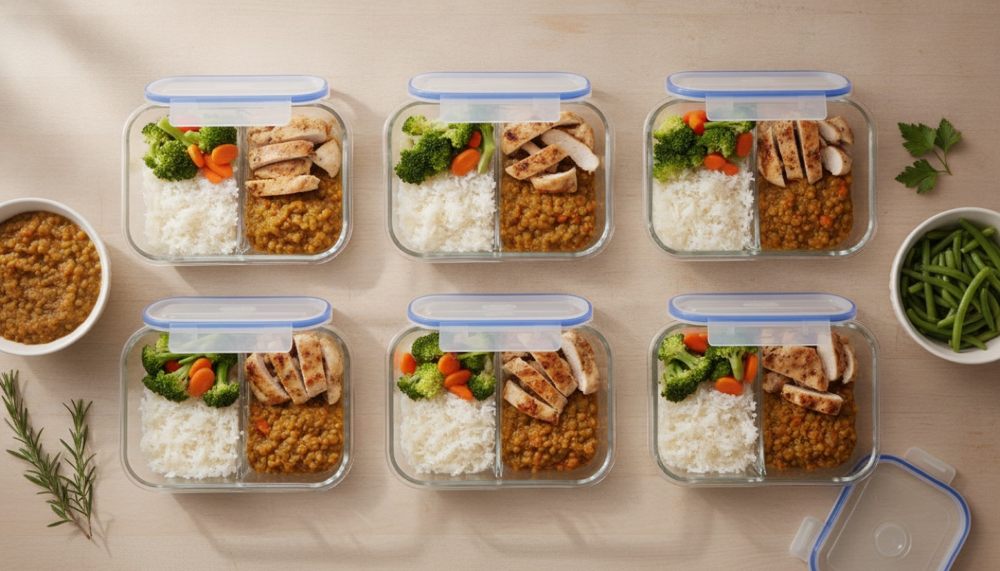

Egy minta-hét, napi öt étkezéssel, élesztő és tejfehérje nélkül. Nem előírás: a sorrend cserélhető, a kétadagos fogásból másnap is van. A lepény és az alaplé hétvégén készül, abból megy az egész hét. A hétvégén négy olyan fogás van, amire hét közben kevesebb idő szokott lenni: a tojáslepény, a polenta-pizza és két édesség.


Vasárnap, egy menetben:
A hétköznapi 20 perces vacsorák ezen állnak vagy dőlnek. Szerdán érdemes a lepényt pótolni, ha elfogyott.
 Könnyű Konyha
Könnyű Konyha